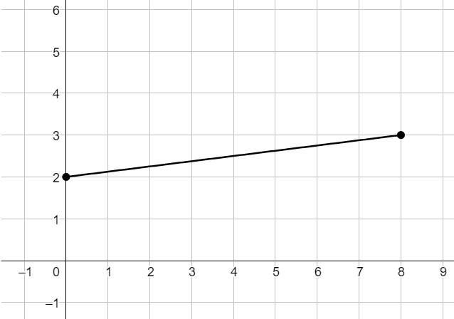
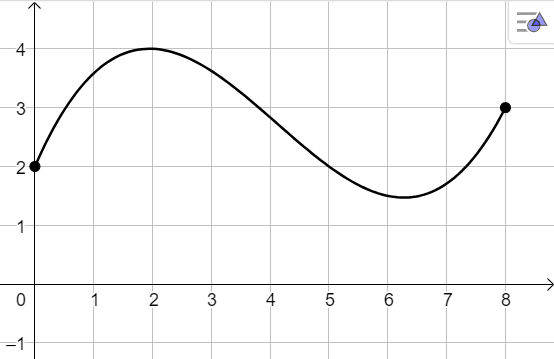
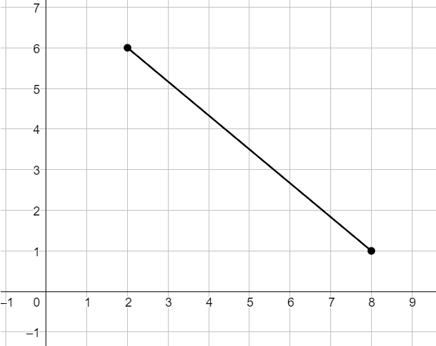
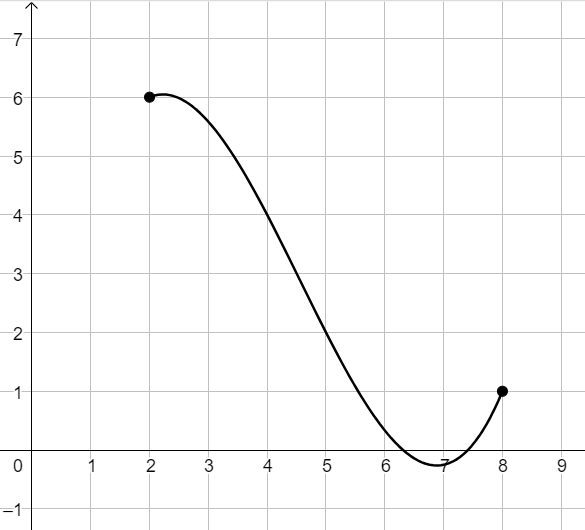
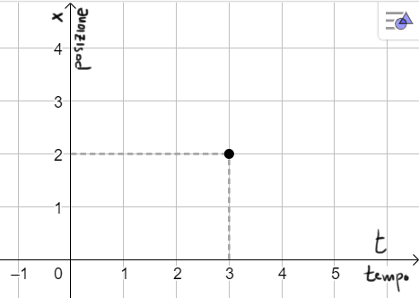

In ciascuno dei seguenti grafici è rappresentato il moto di un corpo lungo un tracciato rettilineo.
Sull'asse orizzontale è riportato il tempo, su quello verticale la posizione del corpo.
a)\(\,\,\,\)Calcolare la velocità media in corrispondenza dell'intervallo di tempo \([0, 8]\)

b)\(\,\,\,\)Calcolare la velocità media in corrispondenza dell'intervallo di tempo \([0, 8]\)

c)\(\,\,\,\)Calcolare la velocità media in corrispondenza dell'intervallo di tempo \([1, 8]\)

d)\(\,\,\,\)Calcolare la velocità media in corrispondenza dell'intervallo di tempo \([1, 8]\)

Esercizio 2
Il moto di un corpo lungo un percorso rettilineo è descritto dalla seguente legge oraria
\[
x = \dfrac{1}{3}t^2
\]
Osserviamo che
\(\boldsymbol{t}\) è la variabile indipendente tempo, rappresentanta nel grafico sull'asse orizzontale.
\(\boldsymbol{x}\) è la variabile dipendente posizione del corpo e viene rappresentata sull'asse verticale.
Ad esempio segnando il seguente punto nel piano, indichiamo che al tempo \(t = 3\) il corpo si trova nella
posizione \(x = 2\) del rettilineo.

Indviduare la velocità media tra gli istanti di tempo
\[
t = 1 \quad\text{e}\quad t = 1 + h
\]
con \(h \in \mathbb{R}\).
Calcolare il limite della velocità media ottenuta per \(h \to 0\).
Interpretare il risultato ottenuto dal punto di vista fisico e grafico.
Soluzione:
La velocità media tra gli istanti \(t = 1 \) e \(t = 1 + h\) è
\[
v_{media} = \dfrac{1}{3}h + \dfrac{2}{3}
\]
Il limite per \(h \to 0 \) è \(\dfrac{2}{3}\) e rappresenta la velocità istantanea del corpo in corrispondenza
di \(t = 1\).
Al livello grafico questa è il coefficiente angolare della retta tangente al grafico della funzione nel punto di coordinate \(\big(1, x(1)\big)\)